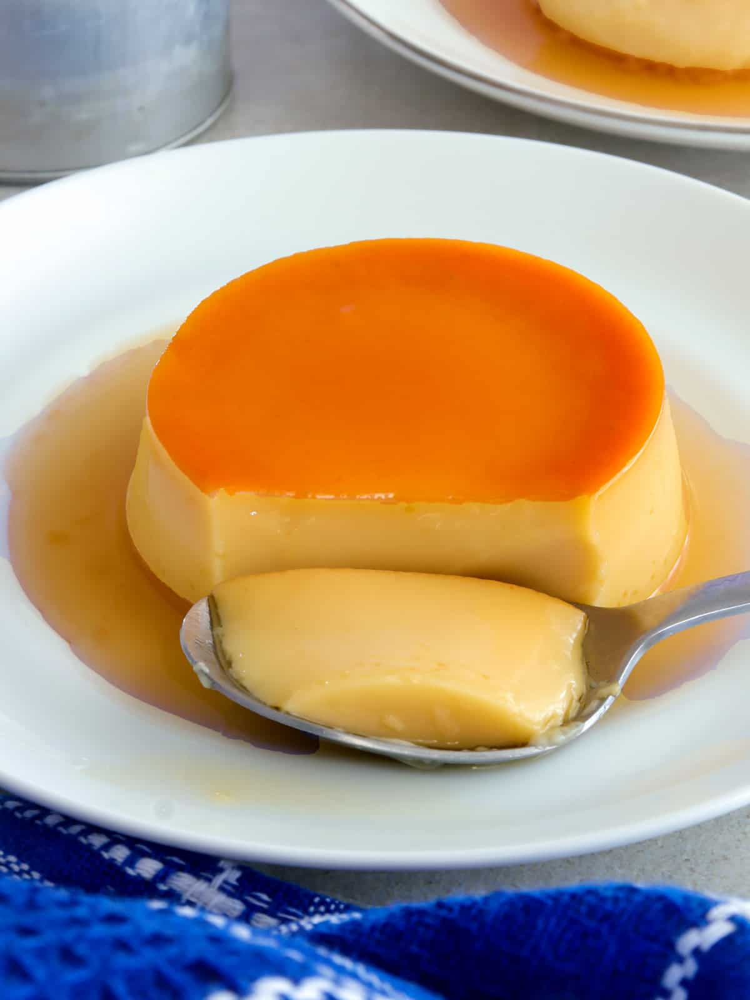

Back

© Kawaling Pinoy
Enjoy the sweet and fluffy Leche Flan!
In the words of Mr. Merano, this is a top dessert in the Philippines. Special occassions won’t be complete without it. It is a staple during celebrations parties, fiestas, and Christmas dinner.
I remember the Leche Flan that my Lola Belen makes when I was still living in Las Pinas.
It really tasted so rich and heavenly. Everyone in our clan always request her to prepare it during special occasions.
I’m lucky because my wife knows how to do a good one too. This is actually her recipe.
If I did it my way, you might be having Leche Flan that tastes like Egg Pie instead.
Ingredients
- 10 pieces eggs
- 1 can condensed milk (14 oz)
- 1 cup fresh milk or evaporated milk
- 1 cup granulated sugar
- 1 teaspoon vanilla extract
Steps on How to Make Leche Flan
- Using all the eggs, separate the yolk from the egg white (only egg yolks will be used).
- Place the egg yolks in a big bowl then beat them using a fork or an egg beater
- Add the condensed milk and mix thoroughly
- Pour-in the fresh milk and Vanilla. Mix well
- Put the mold (llanera) on top of the stove and heat using low fire
- Put-in the granulated sugar on the mold and mix thoroughly until the solid sugar turns into liquid (caramel) having a light brown color.
Note: Sometimes it is hard to find a Llanera (Traditional flan mold) depending on your location.
I find it more convenient to use individual Round Pans in making leche flan.
- Spread the caramel (liquid sugar) evenly on the flat side of the mold
- Wait for 5 minutes then pour the egg yolk and milk mixture on the mold
- Cover the top of the mold using an Aluminum foil
- Steam the mold with egg and milk mixture for 30 to 35 minutes.
- After steaming, let the temperature cool down then refrigerate
- Serve for dessert. Share and Enjoy!
© Panlasang Pinoy